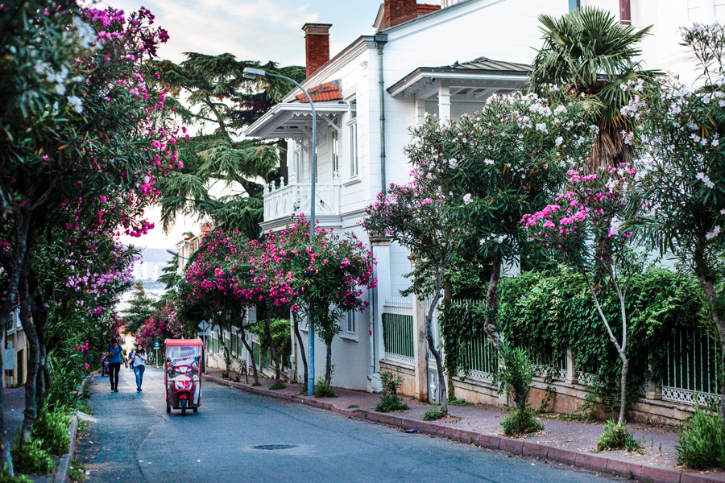
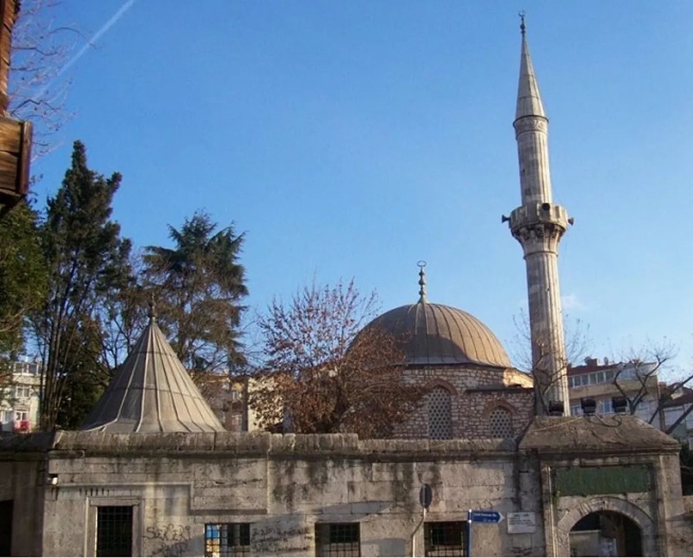
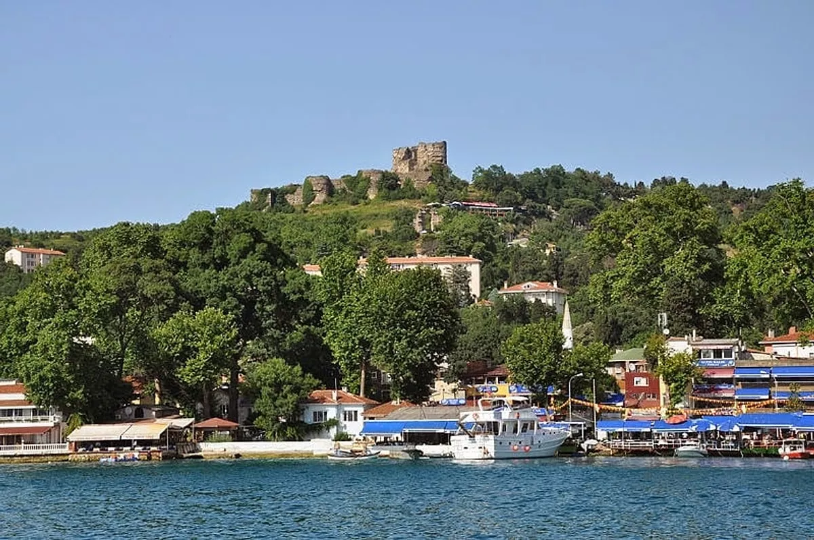
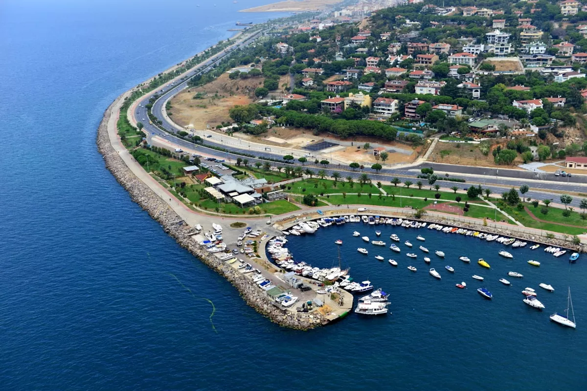

ADALAR
ssssssssssssssssssssssssssssssssssssssssssssssssssssssssssssssssssssssssssssssssssssssssssssssssssssssssssssssssssssssssssssssssssss
İstanbul Adalar hem konumu hem de doğası itibariyle müthiş bir yer. E durum böyle olunca Adalar'da gezilecek yerlerin sayısı da fazla. Yer olarak küçük ama yapabileceğiniz çok fazla aktivite var.Aya Yorgi Kilisesi’ni ziyaret edin.Sait Faik Abasıyanık Müzesi'ni gezin.Rum Ortodoks Ruhban Okulu'na gidin.Kalpazankaya'ya gidin.Hızır İlyas Tepesi’ne çıkın.Adakule’yi görün.Büyükada Rum Yetimhanesi'ne görün.Prinkipo Dondurmacısı'nda dondurma yiyin.Aşıklar Yolu'nda turlayın.Heybeliada Değirmen Tepesi'ne yürüyün.Değirmenburnu Piknik Alanı'nda piknik yapın.Troçki’nin yaşadığı evi görün.Aya Nikola Hangar Müze Alanı’nı gezin.Büyükada Köşkleri'ni görmeye gidin.Dilburnu Tabiat Parkı'nda mangal yapın. Burgazada Öğretmenevi'nde balık yiyin.Bayrak Tepe'ye çıkın.Kumluk Plajı'nda denize girin.
KIDZANIA
ssssssssssssssssssssssssssssssssssssssssssssssssssssssssssssssssssssssssssssssssssssssssssssssssssssssssssssssssssssssssssssssssssss
Kidzania, İstanbul’un eğlence merkezlerinden sadece biri. ‘Eğlen, öğren, keşfet’ sloganını benimseyip buna uygun olarak dizayn edilen Kidzania’da birçok atölye ve etkinliğe ev sahipliği de yapıyor.Kidzania, haftanın her günü sabah 10.00 ila akşam 19.00 arasınada misafirlerine hizmet vermektedir.
Adres: Akasya Alışveriş Merkezi Ankara Devlet Yolu Haydarpaşa 4.Km Çeçen Sk. Acıbadem Üsküdar İstanbul
ÇİNİLİ CAMİ
ssssssssssssssssssssssssssssssssssssssssssssssssssssssssssssssssssssssssssssssssssssssssssssssssssssssssssssssssssssssssssssssssssss
Koca Kasım Ağa tarafından mimarisi yapılan Çinili Camii ya da Zarif Çinili Camii, 1638 yılında hizmete açılmıştır. İnşaatı tamamlanan dönemde yapılan diğer camilere göre küçük olan Çinili Camii, Mahpeyker Valide Kösem Sultan tarafından Koca Kasım Ağa’ya yaptırılmış. Bu caminin iç ve ön cephesini yaparken İznik çinilerine oldukça yer verilmiş. Minberin konik şeklindeki başlığında da çiniye yer verilmiş.
Adres: Validei Atik, Validei Atik Allame Caddesi, Çinili Mescit Sk. No:4, 34664 Üsküdar/İstanbul
ANADOLU KAVAĞI
ssssssssssssssssssssssssssssssssssssssssssssssssssssssssssssssssssssssssssssssssssssssssssssssssssssssssssssssssssssssssssssssssssss
Anadolu Kavağı, Anadolu Yakası’nın Beykoz ilçesinde yer almaktadır. İstanbul Boğazı’nın kuzeyinde konumlanan bu sahil mahallesi, turistik bir mahalledir. Her sene nüfusundan çok daha fazla yerli ya da yabancı turiste ev sahipliği yapıyor.
DRAGOS TEPESİ
ssssssssssssssssssssssssssssssssssssssssssssssssssssssssssssssssssssssssssssssssssssssssssssssssssssssssssssssssssssssssssssssssssss
İstanbul’un Kartal ilçesinde yer alan Dragos Tepesi, Marmara Denizi’nin muhteşem görüntüsü ile güneşi batırmak için sizleri bekliyor. Dragos Tepesi’nde bulunan sosyal tesisler İstanbul Büyükşehir Belediyesi tarafından işletiliyor. Dragos Tepesi, sabah saat 08:30 ila akşam saat 23:00 arasında hizmete açıktır. Giriş ücretsizdir.
KIZ KULESİ
ssssssssssssssssssssssssssssssssssssssssssssssssssssssssssssssssssssssssssssssssssssssssssssssssssssssssssssssssssssssssssssssssssss
Kız Kulesi, 2500 yıllık tarihi geçmişe sahiptir. Atinalı komutan Alkibiades tarafından ilk olarak milattan önce 410 senesinde inşa ettirilmiş. Milattan sonra 1110 senesinde ise İmparator Manuel Comnenos, günümüzdeki yapının taslağı denebilecek yapının oluşmasına katkı sağlamış. Osmanlı İmparatorluğu döneminde ise Kız Kulesi’ne fener eklenerek şu anki görünümü tasarlanmış. Hem müze hem de restoran olarak hizmet veren Kız Kulesi geçici olarak kapalı. Kız Kulesi Sabah 09:00’dan akşam 19:00’a kadar hizmet vermekteydi.
Adres: Salacak, 34668 Üsküdar/İstanbul